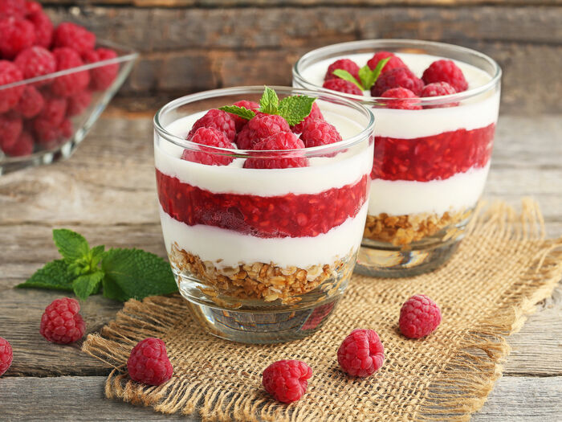

Кулинария подобна моде, она никогда не стоит на месте. Последние десятилетия мы наблюдаем стремление людей к здоровому образу жизни и, как следствие, правильному питанию. Даже легендарная французская гастрономия переняла основные методы японской кухни, которая пропагандирует простые блюда полезные для здоровья. Модные веяния – это далеко не все, сегодня ключевую роль в развитии гастрономии играют новые кулинарные технологии, охватывающие приготовление и сочетание продуктов.
Развитие и становление кулинарного искусства, как и любой другой отрасли человеческой деятельности, происходило на протяжении многих веков. Неоспорим факт, что "кулинария" является "продуктом" формирования человеческой мысли и деятельности и/или жизнедеятельности. Проходили века, столетия, сменяли друг друга эпохи, видоизменялся и сам человек, его настроения, потребности, мироощущение и мировоззрение. Происходила и трансформация вкусовых ощущений и предпочтений. Как и любое другое "творение", кулинария преодолевала разные этапы на пути своего становления: взлеты и падения. Как и любое другое "творение", кулинария продолжает развиваться, радуя человечество своими открытиями.
В настоящее время кулинарное искусство продолжает совершенствоваться - создаются все более яркие и запоминающиеся блюда, позволяющие насладиться своим незабываемым вкусом и ароматом и принципиально отличающиеся от вкусовых ощущений пережитых времен. Если говорить о последних тенденциях и современных технологиях пищевого производства, приготовления блюд и хранения продуктов, то можно упомянуть следующие: вакуумирование (повышает и продлевает уровень пригодности продуктов к потреблению и облегчает логистику товаров), низкотемпературная тепловая обработка (позволяет сохранить первостепенное качество продукта, витамины и полезные элементы, содержащиеся в нем), применение жидкого азота и сухого льда (позволяет усовершенствовать структуру продукта и сократить время приготовления блюда практически в 2 раза), использование искусственных загустителей (альгинат натрия, мальтодекстрин, хлорид кальция) при производстве майонеза, соусов, детского питания, применение трансглютаминаза (обеспечивает склеивание волокон и тканей - производство рыбных палочек), сферификация (способ получения сферических "икринок") и многое другое.